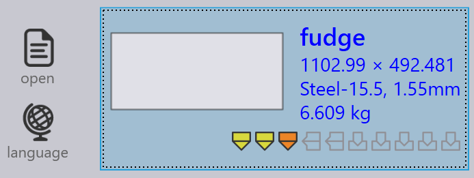

导入

输出设置
保存平面图案 - 启用此选项以保存导入零件的展开图。
平面图案的格式 - 此选项用于选择 DXF 或 GEO 文件格式。
平面图案目标地点 - 这是展开图的保存位置。
导入设置
DXF 文件的单位 - 这是 DXF 文件导入时使用的测量单位，用户可以在 mm 或 inch 之间选择。
材料查找键 - 可以使用逗号分隔符在它们之间分配多个查找条目。导入零件时，TruSmartCAM 使用这些键搜索材料值。然后使用搜索到的值来解析原材料。原始值存储在零件的杂项属性中。
修订查找键 - 导入零件时，将原始零件文件（正在导入的零件文件）中的修订版本值与存储库中的现有修订版本值进行比较。如果修订版本相同，则放弃导入。现在 DXF 文件也支持自定义字段映射。对于 DXF 文件，自定义字段数据从图纸中的文本图层或 PPI 附件中提取。
在同一 CAD 修订版上使用几何形状比较 - 在导入具有相同 CAD 修订版本的零件时比较几何图形，如果检测到差异，则提示用户替换或跳过导入，有关更多详细信息，请参阅 导入配置。
零件名称键 - 此选项的工作方式与材料和 修订查找键 类似。设置一个或多个 零件名称键 以使用 PPI 零件名称 而不是文件名作为零件名称。
厚度查找键 - 可以使用逗号分隔符在它们之间分配多个查找条目。导入零件时，TruSmartCAM 使用这些键搜索厚度值。然后使用搜索到的值来解析厚度。原始值存储在零件的杂项属性中。
厚度比较软糖键 - 这用于在导入零件时查找原材料。解析材料名称和厚度后，TruSmartCAM 尝试解析原材料。有关更多信息，请参阅下面的 Thickness fudge 主题。
导入平面后识别形状 - 导入零件时，可以自动识别和标识零件内的内部形状。
形状识别软糖键 - 形状识别容差值可以设置为：
-
全局级别 - 此值用作所有形状的默认值。
-
单个形状级别 - 可以通过在单个形状级别设置容差值来覆盖默认值。在形状库对话框中选择形状会显示容差值。默认情况下，此值设置为 0，并且此类形状使用默认的全局值。
水平旋转平面 - 通常切割机工作台是矩形且较宽。为了增强工艺可行性，在导入零件后沿零件宽度旋转零件。
零件旋转阈值 - 将此设置为允许旋转的最小数值。任何小于设置值的零件都不会旋转。
其他设置
启用预导入外购模具 - 启用预导入外部工具导入选项以启用 Creo Reader。TruSmartCAM 上传所放置零件的预提取族实例。请注意，实例提取在零件上传期间（作为预导入操作）执行，因此必须在上传零件的计算机上安装 Creo 软件。
为清晰起见，忽略平面缩略图中的图纸颜色 - 启用此选项以生成灰度更清晰的缩略图。为了图像清晰度，将忽略图层颜色和文本实体。
所有导入任务只使用一个引擎 - 启用后，所有重要任务仅使用一个引擎核心。
Thickness fudge
厚度比较软糖键 在库存中没有所需板材厚度时，通过比较库存中板材的厚度值来选择最接近的板材厚度值。
例如，让我们假设以下情况：
-
我们有一个板材厚度为 1.6 mm、材料为钢的零件。

-
厚度比较软糖键 值为 0.1 mm。

-
库存中有厚度为 1.5 mm、1.55 mm 和 1.7 mm 的钢板。

TruSmartCAM 在将 厚度比较软糖键 值（0.1 mm）与导入的项目（测量值为 1.6 mm）进行比较后，选择具有最接近厚度值的板材。在这种情况下，将选择 1.55 mm。
